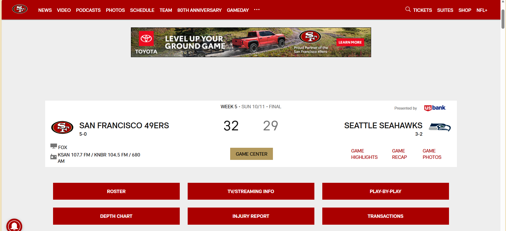

Website Identity & Structure
1. What is the URL of the website?
2. What is the name of the website?
The website name the is the San Francisco 49ers.
3. Who is the site's target audience?
The target audience is the fans that like the team of the sport, and the statistic people who want to see who won the game the team faced.
4. How is the site organized?
The website is a distinct hierarchical organization model around structured content. Giving you the video, highlights, the roster, and where to find tickets.
5. Which CRAP Design Principle does the site use? Provide at least one example.
The website leans into Repetition to its brand consistency. The franchise color palette (San Francisco 49ers deep red and gold accented by stark dark panels) is repeated across all the UI cards.
6. What is the Audit Score according to the Accessibility Checker?
Audit Score of 88/100
7. Include a screenshot of the site you are evaluating, showing all accessibility attributes.

8. What is the site's effectiveness? Does it help users complete actions accurately?
The site makes it easy to understand whats going on without getting stuck. It gives a live view of the injury report from the team during that time they were playing.
9. What is the site's efficiency? Can users perform tasks quickly?
The site maintains a moderate to high efficiency level. The core grid is highly scannable, which allows quick mapping of recent team videos or news headlines. Users on lower-bandwidth devices might experience slight performance lag or layout shifts.
10. How is the engagement? Is it pleasant to use and appropriate for its industry/topic?
The engagement is good it's easy to look at and navigate. It is pleasant to use and no harm will come out of your computer from using it. Yes it is appropriate for its industry/topic.